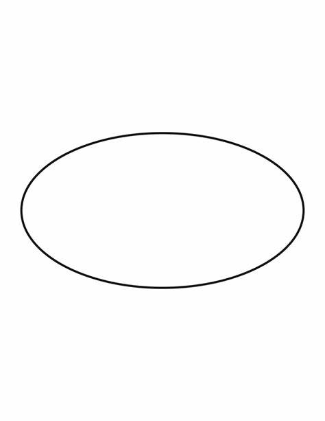
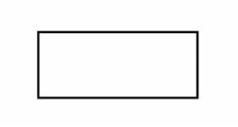
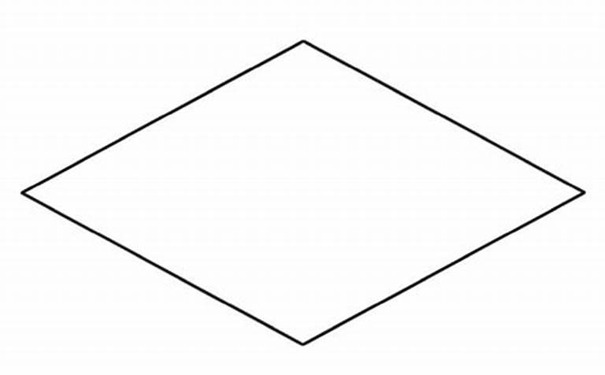
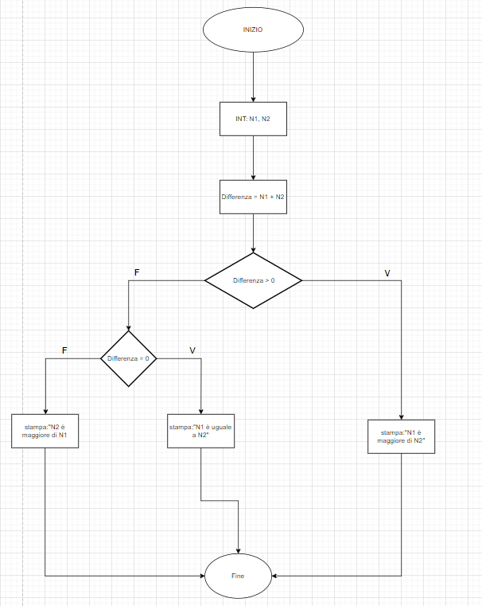

Cosa sono i Diagrammi di Flusso?
I diagrammi di flusso sono strumenti grafici utilizzati per rappresentare visivamente un algoritmo. Ogni passaggio dell'algoritmo è rappresentato da una forma geometrica, come rettangoli per le operazioni o rombi per le decisioni condizionali. Le frecce indicano il flusso di esecuzione tra i vari passi.
Questi diagrammi semplificano la comprensione del flusso logico di un processo, rendendolo visibile e facilmente seguibile. Sono spesso utilizzati per descrivere algoritmi, sistemi complessi, o processi operativi.
Simboli comuni nei Diagrammi di Flusso
- Ellisse: Rappresenta l'inizio o la fine del processo. 
- Rettangolo: Indica un'azione o un'operazione eseguita. 
- Rombo: Rappresenta una decisione condizionale che può biforcarsi in due percorsi. 
-
Freccia: Mostra il flusso del controllo tra i vari passi.

Esempio di Diagramma di Flusso per il Controllo di un Numero
Un esempio di diagramma di flusso che controlla se un numero è positivo, negativo o zero:
Vantaggi dei Diagrammi di Flusso
- Permettono di visualizzare il flusso logico di un processo.
- Aiutano a identificare errori o inefficienze nell'algoritmo.
- Sono facili da capire e condividere con altri.
Come Creare un Diagramma di Flusso
Creare un diagramma di flusso richiede la scomposizione di un processo in passaggi ben definiti. Ogni passaggio deve essere rappresentato con il simbolo corretto e collegato con frecce che mostrano il flusso del processo.